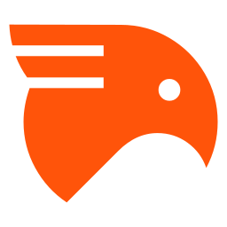

Research
I am a PhD student at Inria supervised by
Marc Lelarge and Guillaume Baudart.
I work with the Picube team at IRIF and the Argo team at Inria
Paris.
My research investigates the reasoning capabilities of Large Language Models. Concretely, my thesis focuses on
improving their ability to write proofs and programs in the proof assistant

Publications
-
Tacq -- Context Aware Tactic Recommendation for RocqJFLA, 2026
-
MiniF2F in Rocq: Automatic Translation Between Proof Assistants -- A Case StudyMATH-AI, NeurIPS, 2025
Academic Cursus
2020
2021
2022
2023
2024
2025
2026
2027
École Polytechnique
Engineering school, following courses about computer science, mathematics, biology, and social
sciences.
MPRI
Master's Degree at Université Paris Cité, following courses about functional programming, proof
assistants, abstract interpretation, proof of programs, probabilistic languages and real-time software
verification.
Internship
Internship at Cambium (Inria) supervised by François Pottier and Armaël Guéneau on the formalisation
of
Kaplan-Tarjan deques in Rocq.
PhD
Large Language Models applied to formal verification in Rocq.